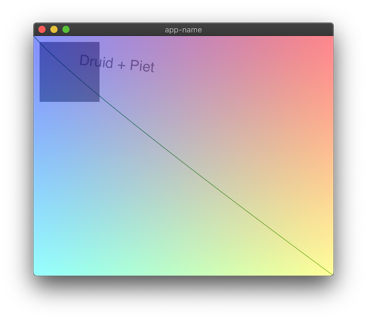
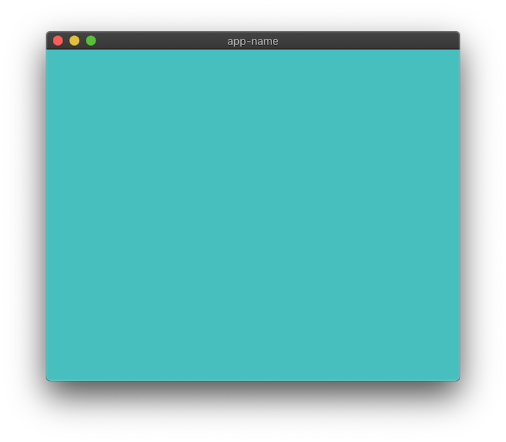
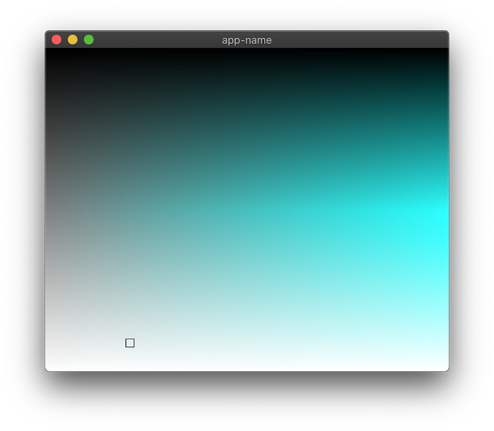
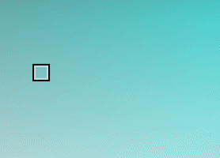
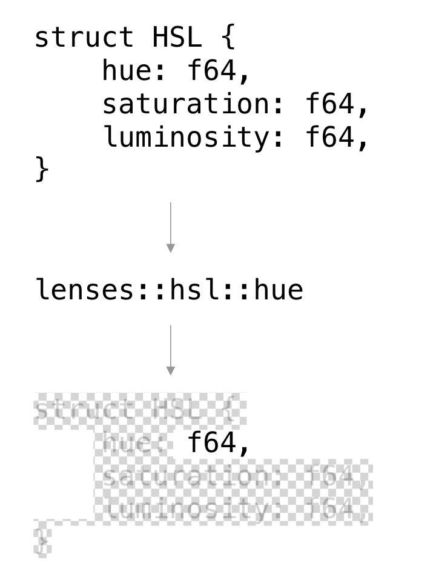
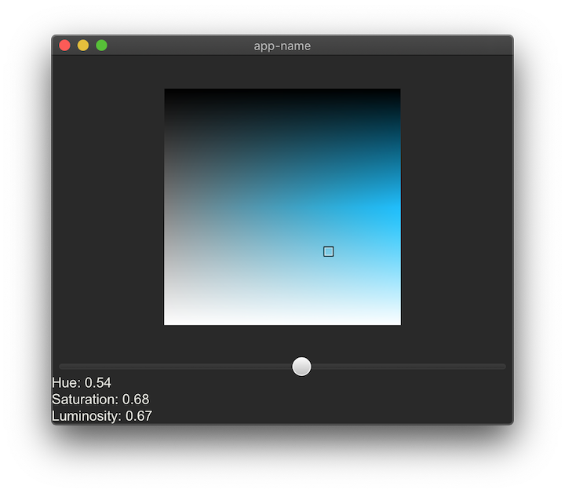

Building a widget for Druid
A fun thing to do
Want to build a desktop app? You probably want to use Electron or Qt or GTK or a native toolkit.
Want to build a thing that you could (maybe) someday use to build a native desktop app? Contribute to Druid!
Druid is a work-in-progress, open source "data-oriented Rust UI design toolkit." You can use it right now to build very feature-incomplete desktop applications for macOS, Windows, and Linux.
For most of 2019 I've been contributing to Druid in the form of widgets. Exciting UI elements like: a button with rounded corners! A progress bar with rounded corners! A checkbox with rounded corners! A textbox with rounded corners!
It's not much, but it's honest work.
One thing I'm really enjoying about Druid is that at the widget level I control every pixel. Druid is a UI framework, sort of like React is for the web, but it uses a 2D graphics library called Piet to actually put pixels on the screen. Drawing my own widgets from scratch, instead of just styling someone else's widgets, was a big conceptual leap at first for me, but it quickly turned into an extremely satisfying activity.
So, I'd like to walk you through the widget creation process. Perhaps you too will adopt this widget-creation hobby and help me fill out Druid's palette of default elements! I think we'd all like to live in a world where an open source project like Druid can build feature-complete desktop applications, but first somebody has to build that world.
1. What is a widget?
In Druid, "Widget" is a trait. So to make a new kind of widget, you just make a new type and then implement Widget on it.
Let’s use a color picker widget as an example:
struct ColorPicker; impl Widget for ColorPicker { fn paint(...) {...} fn layout(...) {...} fn event(...) {...} fn update(...) {...} }
And we're done!
To use our ColorPicker widget, we include the widget as part of a widget hierarchy. Then it's Druid's job to send events to widgets as appropriate and to update widgets as appropriate with new data when the app's state changes.
The widget's methods are generally are called in this order (it’s possible for a widget to receive update without ever receiving event):
event -> update -> layout -> paint
So an event, like a mouse clicking on our widget, could potentially cause a data update, and then we'll position and size the widget correctly with the layout method, and finally paint the widget to the screen.
2. Getting started
A great way to get started working on widgets in Druid is to clone the whole repo and then make a copy of custom_widget.rs in the examples directory. We'll call it color_picker.rs.
So, in our case:
cargo run --example color_picker
(If you're on macOS you'll need to brew install cairo first.)
You should end up opening a window that looks something like this: 
This example has some minimal in-line documentation, so feel free to experiment.
If it helps your mental model, here's what's happening when we launch this app:
The AppLauncher is given a WindowDesc which holds a root widget called CustomWidget. At launch the app's initial state is the String Druid + Piet, which is passed to the widget tree. When we resize the window, the size constraint passed to CustomWidget is updated, and so the widget is redrawn to match its new size.
3. Painting with Piet
Before we think too hard about our data model (famous last words), let's get our own pixels on the screen.
I think we should do a HSL color picker. This widget we're building can display and control the SL (Saturation and Lightness), and then we can add a slider to the app to control H (Hue).
HSL can be represented as three floats in the range (0.0, 1.0). But Piet's Color type is RGBA under the hood, so we need to do some converting before we draw the color on the screen.
Here's a handy HSL to RGB converter I just had laying around. Feel free to copy and paste because this isn't really the focus of this tutorial!
fn hue_to_rgb(p: f64, q: f64, t: f64) -> f64 { let mut t = t; if t < 0. { t += 1. } if t > 1. { t -= 1. }; if t < 1. / 6. { return p + (q - p) * 6. * t; } if t < 1. / 2. { return q; } if t < 2. / 3. { return p + (q - p) * (2. / 3. - t) * 6.; } return p; } fn hsl_to_rgb(h: f64, s: f64, l: f64) -> (u8, u8, u8) { let r; let g; let b; if s == 0.0 { r = l; g = l; b = l; // achromatic } else { let q = if l < 0.5 { l * (1. + s) } else { l + s - l * s }; let p = 2. * l - q; r = hue_to_rgb(p, q, h + 1. / 3.); g = hue_to_rgb(p, q, h); b = hue_to_rgb(p, q, h - 1. / 3.); } return ( (r * 255.).round() as u8, (g * 255.).round() as u8, (b * 255.).round() as u8, ); }
Let's draw a color on the screen as a sanity check.
Clear out the widget impl's paint method and put this in instead:
fn paint( &mut self, paint_ctx: &mut PaintCtx, base_state: &BaseState, data: &String, _env: &Env, ) { let rgb = hsl_to_rgb(0.5, 0.5, 0.5); let rect = Rect::from_origin_size(Point::ORIGIN, base_state.size()); paint_ctx.fill(rect, &Color::rgb8(rgb.0, rgb.1, rgb.2)); }
If everything goes well, you may discover a marvelous new shade of... blue? I think that's in the blue family.

Now let's draw our SL by repurposing that suspiciously convenient make_image_data() function at the bottom of this file.
fn make_sl_image(width: usize, height: usize, hue: f64) -> Vec<u8> { let mut image_data = vec![0; width * height * 4]; for y in 0..height { for x in 0..width { let ix = (y * width + x) * 4; let x_ratio = x as f64 / width as f64; let y_ratio = y as f64 / width as f64; // Where the magic happens let color = hsl_to_rgb(hue, x_ratio, y_ratio); image_data[ix + 0] = color.0; image_data[ix + 1] = color.1; image_data[ix + 2] = color.2; image_data[ix + 3] = 255 } } image_data }
I promise you that most of Piet isn't creating your own Vec<u8> image buffers from scratch, but that doesn't mean you can't enjoy these occasions.
Now let's return to the paint method and draw the image:
// We're generating a 256 by 256 pixels image, with a constant hue of 0.5 let image_data = make_sl_image(256, 256, 0.5); let image = paint_ctx .make_image(256, 256, &image_data, ImageFormat::RgbaSeparate) .unwrap(); // When piet draws our image it will stretch it automatically. // We'll fix this later by giving our widget a fixed size. paint_ctx.draw_image( &image, Rect::from_origin_size(Point::ORIGIN, base_state.size()), InterpolationMode::Bilinear, );
Okay, so we're the king of gradients now. But how about interactivity?
4. Paint a rectangle
To put the "picker" in color picker, let's draw a rectangular cursor that we can move around.
Our cursor will need an x and y coordinate to be drawn at, and that will require some modicum of statefulness. For now, let's make it private to our widget.
If you haven't renamed the CustomWidget struct yet, now is your moment!
struct ColorPicker { cursor_x: f64, cursor_y: f64, }
Let's initialize ColorPicker with some default values in main():
let window = WindowDesc::new(|| ColorPicker { cursor_x: 0.2, cursor_y: 0.9 });
Now let's draw a black rectangle at that (x, y) position. Inside our paint method, below the call to draw_image():
let cursor_rect = Rect::from_origin_size((100., 100.), (10., 10.)); paint_ctx.stroke(cursor_rect, &Color::BLACK, 1.0);
That paints a black-stroked rectangle at the point (100., 100.), with the size of (10., 10.). I know that doesn't use our cursor_x / y, but I just wanted to show you the basic pixel positioning version real quick before we get fancy and use a UnitPoint for positioning.

Okay, fancy time:
// Create a UnitPoint from our cursor floats let cursor_point = druid::piet::UnitPoint::new(self.cursor_x, self.cursor_y); // Create a rect that's the size of our whole widget let resolve_rect = Rect::from_origin_size(Point::ORIGIN, base_state.size()); // Calling resolve on the UnitPoint returns a Point relative to the rectangle it's passed let resolved_point = cursor_point.resolve(resolve_rect); let cursor_rect = Rect::from_origin_size(resolved_point, (10., 10.)); paint_ctx.stroke(cursor_rect, &Color::BLACK, 1.0);
Beautiful.
One last thing to draw: an inset white rectangle to make our cursor visible over dark zones.
let inset_point = resolved_point + druid::kurbo::Vec2::new(1., 1.); let white_cursor_rect = Rect::from_origin_size(inset_point, (8., 8.)); paint_ctx.stroke(white_cursor_rect, &Color::rgba8(255, 255, 255, 128), 1.0);
Note the tasteful use of transparency in the fourth or fifth method of color creation I've shown thus far.
5. Adding interactivity
Time to move on to the fn event() method! The event() method receives an Event called event that we can match on:
fn event(&mut self, event: &Event, _ctx: &mut EventCtx, _data: &mut String, _env: &Env) { match event { Event::MouseDown(mouse) => { dbg!(mouse); }, _ => (), } }
If you run the app and click anywhere inside the window, you should get some helpful info about the MouseEvent printed to the terminal.
Here's what mine said:
[examples/color_picker.rs:133] mouse = MouseEvent {
pos: (260.84375, 203.609375),
mods: Mods(None),
count: 1,
button: Left,
}
So what we want to do is take that position, UnitPoint-ify it, and set self.cursor_x / self.cursor_y to that.
But here's the thing: we need to know how big the widget is to calculate a 0.0 -> 1.0 value, and we can't access that size information from inside the event handler. So: more state!
Add a size field to our struct.
struct ColorPicker { cursor_x: f64, cursor_y: f64, size: Size, }
And initialize it as Size::default().
let window = WindowDesc::new(|| ColorPicker { cursor_x: 0.2, cursor_y: 0.9, size: Size::default() });
Inside the widget's layout method we'll set the size to equal the max BoxConstraints our widget is passed and then return that.
self.size = bc.max(); self.size
And now, finally, we can do our calculation inside the event method:
Event::MouseDown(mouse) => { self.cursor_x = mouse.pos.x / self.size.width; self.cursor_y = mouse.pos.y / self.size.height; dbg!(self.cursor_x, self.cursor_y); },
Run that and... Oh no! The cursor isn't moving! This was my clever plan to get you to notice one very important part of widget-building:
ctx.invalidate();
Invalidate marks this widget as "dirty," so now Druid knows to redraw it on its next pass. Add this line below those cursor calculations in event and you should have your first interactive Druid widget up and running! Congrats.
6. Better event handling

If you click around you'll notice the cursor doesn't move exactly how you'd expect, especially when you click and drag. That's because you've used a color picker before, and you have expectations. This is the "game" of making widgets: if it looks like a widget people have used before, it needs to behave in a way that those prior experiences have conditioned them for.
To be specific: in our case, we need to handle Event::MouseMoved inside our event match statement.
Event::MouseMoved(mouse) => { self.cursor_x = mouse.pos.x / self.size.width; self.cursor_y = mouse.pos.y / self.size.height; ctx.invalidate(); },
If you run that, you'll notice it works a little too well: now the cursor follows your mouse around no matter what.
In the MouseDown event we need to set the widget as "active," and then when we move the cursor we can check if we're active. And so, of course, we'll also need a MouseUp event to turn off active.
Event::MouseDown(mouse) => { ctx.set_active(true); self.cursor_x = mouse.pos.x / self.size.width; self.cursor_y = mouse.pos.y / self.size.height; ctx.invalidate(); }, Event::MouseMoved(mouse) => { if ctx.is_active() { self.cursor_x = mouse.pos.x / self.size.width; self.cursor_y = mouse.pos.y / self.size.height; ctx.invalidate(); } }, Event::MouseUp(_) => { ctx.set_active(false); }, _ => (),
You'll notice we're working with the mutable EventCtx object, which is a bit of a grab bag of functionality. I won't go into it all here, I'm just giving you a heads up in case you're wondering how to do X and you find out later that X is a method on EventCtx.
7. Dealing with Data
Right now our app functional but... incomplete. One limitation is the fact that we have no idea what color value we've selected unless we print it to the terminal. Let's fix that.
You might have noticed that we're still passing a String to our root widget at app launch. Let's change that to a custom ColorState struct, and make a new HSL color type for it to hold.
use druid::{Data, ...}; #[derive(Clone, Data)] struct HSL { hue: f64, saturation: f64, lightness: f64 }
The Data trait has to be implemented for any data that flows through our app; Druid uses it to determine when changes have occured that our widget needs to know about. Data can be derived in most cases; what’s important is that types that implement Data should be fairly cheap to clone and compare. Importantly, Data is implemented automatically for primitive types, as well as for Arc<T> and Rc<T>; if you're using a more complicated type, you can always wrap it in one of those smart pointers.
Right now our ColorPicker widget only accepts data of type String. Change it to HSL.
impl Widget<HSL> for ColorPicker { ... }
Then, in the AppLauncher, change the initial state to an HSL object with your favorite initial values.
.launch(HSL { hue: 0.4, saturation: 0.4, lightness: 0.4 })
We also need to change the type of the data field in each of our widget methods from &String / &mut String to &HSL / &mut HSL.
And now that that's all wired up, we can go around and change all of our self.cursor_x and self.cursor_y out for data.saturation and data.lightness respectively and delete cursor_x / cursor_y from the ColorPicker struct. In a sense, we've "lifted" the source of truth for our widget's important state up to the app level, while keeping the unimportant implementation details (just the size, in this case) internal.
Now if you change the hardcoded hue value being passed to make_sl_image() to data.hue, you should see whatever initial hue state you've provided your app.
8. Sliders (and Lenses!)
So right now we can set the hue at compile time. But a real color picker would let you adjust it on the fly. What we need is a slider.
I just so happen to be the proud father of a widget called Slider. While our ColorPicker is currently designed to work with data of type HSL, Slider operates on plain old f64. So if we put a Slider in our widget tree, what will happen? We'll get an error something like this:
the trait `druid::Widget<HSL>` is not implemented for `impl druid::Widget<f64>`
But ColorPicker is just three f64s under the hood. How do we get at those?
Enter Lenses. A lens is a datatype that gives access to a part of a larger data structure. In our case, we can derive Lens just like how we derived Data:
use druid::{Lens, ...}; #[derive(Clone, Data, Lens)] struct HSL { hue: f64, saturation: f64, lightness: f64, }
This macro creates a module called lenses, with a submodule of hsl, with subsubmodules of hue, saturation, and lightness. We can use these lenses to adapt our HSL data structure to any widget that expects an f64:
LensWrap::new(WidgetThatExpectsf64::new(), lenses::hsl::hue);
Sorry for the excess of magic, Druid is a work in progress and we're still figuring out the design for some of this stuff. The most important takeaway for now is that Lenses let us "focus" on a single field in a larger data structure.
+-------+
| |
Struct with | | That one
a bunch of +----> | Lens | +---> field we
fields | | care about
| |
+-------+
You could think of them like a mask in Photoshop: 
Or, if it helps, just think of it as a getter / setter.
Okay, so we're about to expand our widget tree a bit. Let's spin it out into its own function. For starters, let's just do a lens-wrapped Slider on its own and then we'll add the ColorPicker back in.
use druid::{LensWrap, ...}; use druid::widget::{Slider}; fn ui_builder() -> impl Widget<HSL> { let slider = LensWrap::new(Slider::new(), lenses::hsl::hue); slider } fn main() { let window = WindowDesc::new(ui_builder); ... }
So now ui_builder() will construct our widget tree for us. We pass the Slider widget and the hue lens to LensWrap, which acts as a higher order widget. The Slider gets (mutable!) access to the HSL’s hue field.
If you run that, you should get an app that's just a Slider. Let's add a few labels so we can see what the slider is doing.
use druid::widget::{Column, DynLabel, ...}; let mut col = Column::new(); let slider = LensWrap::new(Slider::new(), lenses::hsl::hue); let hue_label = DynLabel::new(|data: &HSL, _env| { format!("Hue: {0:.2}", data.hue) }); let sat_label = DynLabel::new(|data: &HSL, _env| { format!("Saturation: {0:.2}", data.saturation) }); let light_label = DynLabel::new(|data: &HSL, _env| { format!("Lightness: {0:.2}", data.lightness) }); col.add_child(slider, 1.0); col.add_child(hue_label, 1.0); col.add_child(sat_label, 1.0); col.add_child(light_label, 1.0); col
Each of these DynLabel widgets accepts a closure which converts the data into a String (so no need for a Lens). We add them each, along with the slider, to a column widget to keep everything nice and organized.
Now let's add back in the ColorPicker widget.
let color_picker = ColorPicker { size: Size::default() }; col.add_child(color_picker, 1.0);
If everything has gone correctly, the hue slider should control the hue of our ColorPicker now. Not too bad, yes?
Eight Point Five
One quick fix to keep our cursor (mostly) inside its zone:
data.saturation = (mouse.pos.x / self.size.width).max(0.0).min(1.0); data.lightness = (mouse.pos.y / self.size.height).max(0.0).min(1.0);
9. Layout
Right now our rectangle of color squishes and squashes when we resize the window. That might be appropriate for some widgets, but in my experience, most color pickers have a fixed size and aspect ratio.
Also, just so you're aware, Piet's draw_image() method automatically scales and adjusts the aspect ratio of an image to match the rectangle it's passed. That's why our "256 x 256" image is never actually "256 x 256"
Let's revisit the layout method and fix this.
let default_size = Size::new(256., 256.); self.size = bc.constrain(default_size); self.size
What bc.constrain is saying is: I want to be this particular size, clamped between the maximum size I'm allowed to fill and the minimum size I'm required to fill.
So if we run this... nothing has changed. That's because, in fact, the constraints we're being passed have an identical minimum and max. Therefore constrain ends up ignoring our default_size entirely.
To fix this we need one more widget to wrap color_picker when we add it to col.
druid::widget::{Align, ...}; // col.add_child(color_picker, 1.0); col.add_child(Align::centered(color_picker), 1.0);
What Align does (in addition to aligning its child) is to pass along a minimum constraint of zero size while keeping the max constraint the same.
Finally, let's zero out the flex amount of the slider and labels:
col.add_child(slider, 0.0); col.add_child(hue_label, 0.0); col.add_child(sat_label, 0.0); col.add_child(light_label, 0.0);

Now if we run this, we can still squish the ColorPicker if we make the window really small, but we can't stretch it beyond 256 x 256.
10. A time for self-congratulation
Good job if you got this far, and thanks for reading!
Obviously there are a lot of improvements left to make. For instance, the cursor hangs off the edge on the bottom and right sides, and isn't really centered on the mouse anyway. But I think it should be pretty straightforward to solve that problem using the techniques we've already covered and some peeking at other widget code.
It might be fun to make a color picker that's generic over other color spaces, but I don't really know the best way to do that myself so maybe you could do that and tell me about it.
If you do run into issues in general that sound more my speed, please hit me up in my twitter dms or join the #druid channel in our Zulip chat.
Update: An earlier version of this tutorial incorrectly used "luminosity" to refer to "lightness." This has been corrected. Thank you, /u/burgundy_tide!